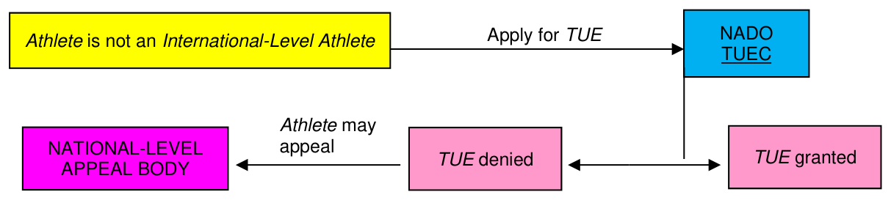
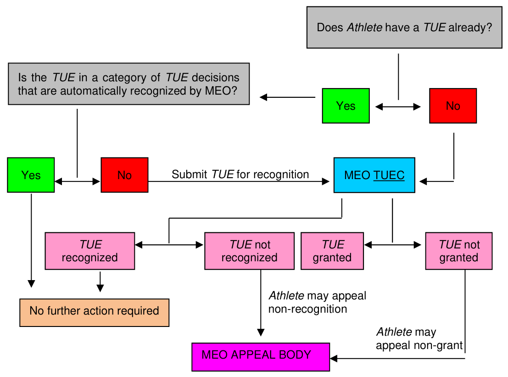
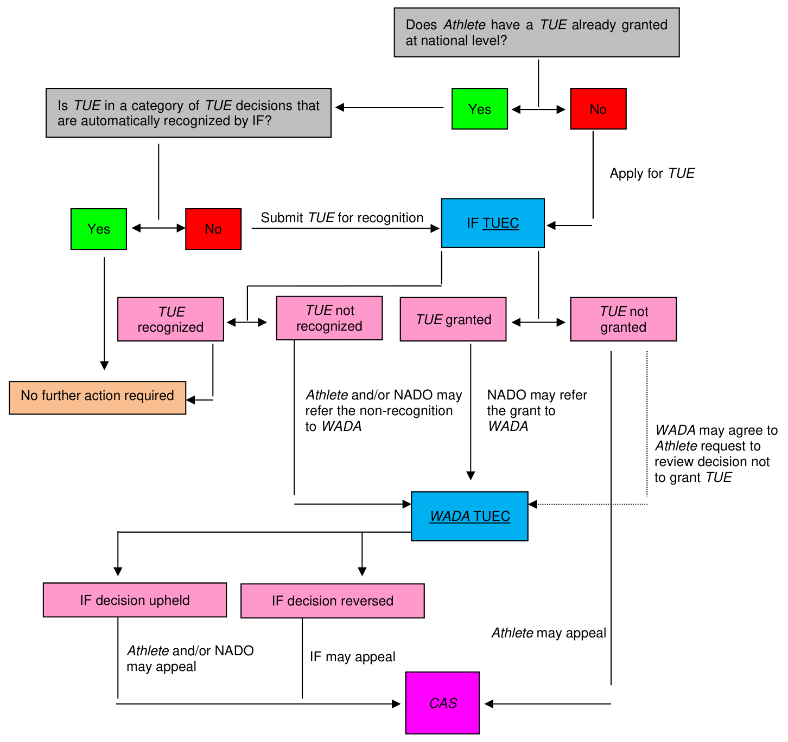

International Standards · ISTUE
Edition 2016 · effective 1 January 2016 · superseded
Retrieved on 25 November 2026 from https://www.wada-ama.org/sites/default/files/resources/files/wada-2016-istue-final-en_0.pdf
Editions: 2027 (current) · 2023 · 2021 · 2019 · 2016 · 2015 · 2011 (revised January 2012) · 2010 · 2009
p. 1
International Standard for Therapeutic Use Exemptions
WORLD ANTI-DOPING CODE INTERNATIONAL STANDARD
THERAPEUTIC USE EXEMPTIONS
JANUARY 2016
p. 2
International Standard for Therapeutic Use Exemptions
The World Anti-Doping Code International Standard for Therapeutic Use Exemptions (ISTUE) is a mandatory International Standard developed as part of the World Anti-Doping Program.
The International Standard for Therapeutic Use Exemptions was first adopted in 2004 and came into effect 1 January 2005. Further revisions were made in 2009, 2010, 2011 and 2015. The enclosed ISTUE incorporates revisions approved by the WADA Executive Committee on 18 November 2015. It will come into effect on 1 January 2016.
The official text of the International Standard for Therapeutic Use Exemptions shall be maintained by WADA and shall be published in English and French. In the event of any conflict between the English and French versions, the English version shall prevail.
Published by:
World Anti-Doping Agency Stock Exchange Tower 800 Place Victoria (Suite 1700) PO Box 120 Montreal, Quebec Canada H4Z 1B7
URL: www.wada-ama.org
Tel: + 1 514 904 9232 Fax: + 1 514 904 8650 E-mail: code@wada-ama.org
p. 3
p. 4
PART ONE: INTRODUCTION, CODE PROVISIONS AND DEFINITIONS
1.0 Introduction and Scope
The International Standard for Therapeutic Use Exemptions is a mandatory International Standard developed as part of the World Anti-Doping Program.
The purpose of the International Standard for Therapeutic Use Exemptions is to establish (a) the conditions that must be satisfied in order for a Therapeutic Use Exemption (or TUE) to be granted, permitting the presence of a Prohibited Substance in an Athlete's Sample or the Athlete's Use or Attempted Use, Possession and/or Administration or Attempted Administration of a Prohibited Substance or Prohibited Method for therapeutic reasons; (b) the responsibilities imposed on Anti-Doping Organizations in making and communicating TUE decisions; (c) the process for an Athlete to apply for a TUE; (d) the process for an Athlete to get a TUE granted by one Anti-Doping Organization recognized by another Anti-Doping Organization; (e) the process for WADA to review TUE decisions; and (f) the strict confidentiality provisions that apply to the TUE process.
Terms used in this International Standard that are defined terms from the Code are written in italics. Terms that are defined in this International Standard are underlined.
2.0 Code Provisions
The following articles in the 2015 Code are directly relevant to the International Standard for Therapeutic Use Exemptions:
Code Article 4.4 Therapeutic Use Exemptions ("TUEs").
4.4.1 The presence of a Prohibited Substance or its Metabolites or Markers, and/or the Use or Attempted Use, Possession or Administration or Attempted Administration of a Prohibited Substance or Prohibited Method shall not be considered an anti-doping rule violation if it is consistent with the provisions of a TUE granted in accordance with the International Standard for Therapeutic Use Exemptions.
4.4.2 An Athlete who is not an International-Level Athlete should apply to his or her National Anti-Doping Organization for a TUE. If the National Anti-Doping Organization denies the application, the Athlete may appeal exclusively to the national-level appeal body described in Articles 13.2.2 and 13.2.3.
p. 5
4.4.3 An Athlete who is an International-Level Athlete should apply to his or her International Federation.
4.4.3.1 Where the Athlete already has a TUE granted by his or her National Anti-Doping Organization for the substance or method in question, if that TUE meets the criteria set out in the International Standard for Therapeutic Use Exemptions, then the International Federation must recognize it. If the International Federation considers that the TUE does not meet those criteria and so refuses to recognize it, it must notify the Athlete and his or her National Anti-Doping Organization promptly, with reasons. The Athlete or the National Anti-Doping Organization shall have 21 days from such notification to refer the matter to WADA for review. If the matter is referred to WADA for review, the TUE granted by the National Anti-Doping Organization remains valid for national-level Competition and Out-of-Competition Testing (but is not valid for international-level Competition) pending WADA's decision. If the matter is not referred to WADA for review, the TUE becomes invalid for any purpose when the 21-day review deadline expires.
4.4.3.2 If the Athlete does not already have a TUE granted by his or her National Anti-Doping Organization for the substance or method in question, the Athlete must apply directly to his or her International Federation for a TUE as soon as the need arises. If the International Federation (or the National Anti-Doping Organization, where it has agreed to consider the application on behalf of the International Federation) denies the Athlete's application, it must notify the Athlete promptly, with reasons. If the International Federation grants the Athlete's application, it must notify not only the Athlete but also his or her National Anti-Doping Organization, and if the National Anti-Doping Organization considers that the TUE does not meet the criteria set out in the International Standard for Therapeutic Use Exemptions, it has 21 days from such notification to refer the matter to WADA for review. If the National Anti-Doping Organization refers the matter to WADA for review, the TUE granted by the International Federation remains valid for international-level Competition and Out-of-Competition Testing (but is not valid for national-level Competition) pending WADA's decision. If the National Anti-Doping Organization does not refer the matter to WADA for review, the TUE granted by the International Federation becomes valid for national-level Competition as well when the 21-day review deadline expires.
[Comment to Article 4.4.3: If the International Federation refuses to recognize a TUE granted by a National Anti-Doping Organization only because medical records or other information are missing that are needed to demonstrate satisfaction with the criteria in the International Standard for Therapeutic Use Exemptions, the matter should not be referred to WADA. Instead, the file should be completed and re-submitted to the International Federation.
If an International Federation chooses to test an Athlete who is not an International-Level Athlete, it must recognize a TUE granted to that Athlete by his or her National Anti-Doping Organization.]
p. 6
4.4.4 A Major Event Organization may require Athletes to apply to it for a TUE if they wish to Use a Prohibited Substance or a Prohibited Method in connection with the Event. In that case:
4.4.4.1 The Major Event Organization must ensure a process is available for an Athlete to apply for a TUE if he or she does not already have one. If the TUE is granted, it is effective for its Event only.
4.4.4.2 Where the Athlete already has a TUE granted by his or her National Anti-Doping Organization or International Federation, if that TUE meets the criteria set out in the International Standard for Therapeutic Use Exemptions, the Major Event Organization must recognize it. If the Major Event Organization decides the TUE does not meet those criteria and so refuses to recognize it, it must notify the Athlete promptly, explaining its reasons.
4.4.4.3 A decision by a Major Event Organization not to recognize or not to grant a TUE may be appealed by the Athlete exclusively to an independent body established or appointed by the Major Event Organization for that purpose. If the Athlete does not appeal (or the appeal is unsuccessful), he or she may not Use the substance or method in question in connection with the Event, but any TUE granted by his or her National Anti-Doping Organization or International Federation for that substance or method remains valid outside of that Event.
[Comment to Article 4.4.4.3: For example, the CAS Ad Hoc Division or a similar body may act as the independent appeal body for particular Events, or WADA may agree to perform that function. If neither CAS nor WADA are performing that function, WADA retains the right (but not the obligation) to review the TUE decisions made in connection with the Event at any time, in accordance with Article 4.4.6.]
4.4.5 If an Anti-Doping Organization chooses to collect a Sample from a Person who is not an International-Level or National-Level Athlete, and that Person is Using a Prohibited Substance or Prohibited Method for therapeutic reasons, the Anti-Doping Organization may permit him or her to apply for a retroactive TUE.
p. 7
4.4.6 WADA must review an International Federation's decision not to recognize a TUE granted by the National Anti-Doping Organization that is referred to it by the Athlete or the Athlete's National Anti-Doping Organization. In addition, WADA must review an International Federation's decision to grant a TUE that is referred to it by the Athlete's National Anti-Doping Organization. WADA may review any other TUE decisions at any time, whether upon request by those affected or on its own initiative. If the TUE decision being reviewed meets the criteria set out in the International Standard for Therapeutic Use Exemptions, WADA will not interfere with it. If the TUE decision does not meet those criteria, WADA will reverse it.
[Comment to Article 4.4.6: WADA shall be entitled to charge a fee to cover the costs of (a) any review it is required to conduct in accordance with Article 4.4.6; and (b) any review it chooses to conduct, where the decision being reviewed is reversed.]
4.4.7 Any TUE decision by an International Federation (or by a National Anti-Doping Organization where it has agreed to consider the application on behalf of an International Federation) that is not reviewed by WADA, or that is reviewed by WADA but is not reversed upon review, may be appealed by the Athlete and/or the Athlete's National Anti-Doping Organization, exclusively to CAS.
[Comment to Article 4.4.7: In such cases, the decision being appealed is the International Federation's TUE decision, not WADA's decision not to review the TUE decision or (having reviewed it) not to reverse the TUE decision. However, the time to appeal the TUE decision does not begin to run until the date that WADA communicates its decision. In any event, whether the decision has been reviewed by WADA or not, WADA shall be given notice of the appeal so that it may participate if it sees fit.]
4.4.8 A decision by WADA to reverse a TUE decision may be appealed by the Athlete, the National Anti-Doping Organization and/or the International Federation affected, exclusively to CAS.
4.4.9 A failure to take action within a reasonable time on a properly submitted application for grant/recognition of a TUE or for review of a TUE decision shall be considered a denial of the application.
p. 8
Code Article 13.4 Appeals relating to TUEs
TUE decisions may be appealed exclusively as provided in Article 4.4.
3.0 Definitions and Interpretation
3.1 Defined terms from the 2015 Code that are used in the International Standard for Therapeutic Use Exemptions:
ADAMS: The Anti-Doping Administration and Management System is a Web-based database management tool for data entry, storage, sharing, and reporting designed to assist stakeholders and WADA in their anti-doping operations in conjunction with data protection legislation.
Administration: Providing, supplying, supervising, facilitating, or otherwise participating in the Use or Attempted Use by another Person of a Prohibited Substance or Prohibited Method. However, this definition shall not include the actions of bona fide medical personnel involving a Prohibited Substance or Prohibited Method used for genuine and legal therapeutic purposes or other acceptable justification and shall not include actions involving Prohibited Substances which are not prohibited in Out-of-Competition Testing unless the circumstances as a whole demonstrate that such Prohibited Substances are not intended for genuine and legal therapeutic purposes or are intended to enhance sport performance.
Adverse Analytical Finding: A report from a *WADA-*accredited laboratory or other WADA-approved laboratory that, consistent with the International Standard for Laboratories and related Technical Documents, identifies in a Sample the presence of a Prohibited Substance or its Metabolites or Markers (including elevated quantities of endogenous substances) or evidence of the Use of a Prohibited Method.
Anti-Doping Organization: A Signatory that is responsible for adopting rules for initiating, implementing or enforcing any part of the Doping Control process. This includes, for example, the International Olympic Committee, the International Paralympic Committee, other Major Event Organizations that conduct Testing at their Events, WADA, International Federations, and National Anti-Doping Organizations.
Athlete: Any Person who competes in sport at the international level (as defined by each International Federation) or the national level (as defined by each National Anti-Doping Organization). An Anti-Doping Organization has discretion to apply anti-doping rules to an Athlete who is neither an International-Level Athlete nor a National-Level Athlete, and thus to bring them within the definition of "Athlete." In relation to Athletes who are neither International-Level nor National-Level Athletes, an Anti-Doping Organization may elect to: conduct limited Testing or no Testing at all; analyze Samples for less than the full menu of Prohibited Substances; require limited or no whereabouts information; or not require advance TUEs. However, if an Article 2.1, 2.3 or 2.5 anti-doping rule violation is committed by any Athlete over whom an Anti-Doping Organization has authority who competes below the international or national level, then the Consequences set forth in the Code (except Article 14.3.2) must be applied. For purposes of Article 2.8 and Article 2.9 and for purposes of anti-doping information and education, any Person who participates in sport under the authority of any Signatory, government, or other sports organization accepting the Code is an Athlete.
p. 9
[Comment: This definition makes it clear that all International- and National-Level Athletes are subject to the anti-doping rules of the Code, with the precise definitions of international- and national-level sport to be set forth in the anti-doping rules of the International Federations and National Anti-Doping Organizations, respectively. The definition also allows each National Anti-Doping Organization, if it chooses to do so, to expand its anti-doping program beyond International- or National-Level Athletes to competitors at lower levels of Competition or to individuals who engage in fitness activities but do not compete at all. Thus, a National Anti-Doping Organization could, for example, elect to test recreational-level competitors but not require advance TUEs. But an anti-doping rule violation involving an Adverse Analytical Finding or Tampering, results in all of the Consequences provided for in the Code (with the exception of Article 14.3.2). The decision on whether Consequences apply to recreational-level Athletes who engage in fitness activities but never compete is left to the National Anti-Doping Organization. In the same manner, a Major Event Organization holding an Event only for masters-level competitors could elect to test the competitors but not analyze Samples for the full menu of Prohibited Substances. Competitors at all levels of Competition should receive the benefit of anti-doping information and education.]
Code: The World Anti-Doping Code.
Competition: A single race, match, game or singular sport contest. For example, a basketball game or the finals of the Olympic 100-meter race in athletics. For stage races and other sport contests where prizes are awarded on a daily or other interim basis the distinction between a Competition and an Event will be as provided in the rules of the applicable International Federation.
Event: A series of individual Competitions conducted together under one ruling body (e.g., the Olympic Games, FINA World Championships, or Pan American Games).
p. 10
In-Competition: Unless provided otherwise in the rules of an International Federation or the ruling body of the Event in question, "In-Competition" means the period commencing twelve hours before a Competition in which the Athlete is scheduled to participate through the end of such Competition and the Sample collection process related to such Competition.
[Comment: An International Federation or ruling body for an Event may establish an "In-Competition" period that is different than the Event Period.]
International-Level Athlete: Athletes* who compete in sport at the international level, as defined by each International Federation, consistent with the International Standard for Testing and Investigations.
[Comment: Consistent with the International Standard for Testing and Investigations, the International Federation is free to determine the criteria it will use to classify Athletes as International-Level Athletes, e.g., by ranking, by participation in particular International Events, by type of license, etc. However, it must publish those criteria in clear and concise form, so that Athletes are able to ascertain quickly and easily when they will become classified as International-Level Athletes. For example, if the criteria include participation in certain International Events, then the International Federation must publish a list of those International Events.]
Major Event Organizations: The continental associations of National Olympic Committees and other international multi-sport organizations that function as the ruling body for any continental, regional or other International Event.
National Anti-Doping Organization: The entity(ies) designated by each country as possessing the primary authority and responsibility to adopt and implement anti-doping rules, direct the collection of Samples, the management of test results, and the conduct of hearings at the national level. If this designation has not been made by the competent public authority(ies), the entity shall be the country's National Olympic Committee or its designee.
National-Level Athlete: Athletes* who compete in sport at the national level, as defined by each National Anti-Doping Organization, consistent with the International Standard for Testing and Investigations.
Possession: The actual, physical Possession, or the constructive Possession (which shall be found only if the Person has exclusive control or intends to exercise control over the Prohibited Substance or Prohibited Method or the premises in which a Prohibited Substance or Prohibited Method exists); provided, however, that if the Person does not have exclusive control over the Prohibited Substance or Prohibited Method or the premises in which a Prohibited Substance or Prohibited Method exists, constructive Possession shall only be found if the Person knew about the presence of the Prohibited Substance or Prohibited Method and intended to exercise control over it. Provided, however, there shall be no anti-doping rule violation based solely on Possession if, prior to receiving notification of any kind that the Person has committed an anti-doping rule violation, the Person has taken concrete action demonstrating that the Person never intended to have Possession and has renounced Possession by explicitly declaring it to an Anti-Doping Organization. Notwithstanding anything to the contrary in this definition, the purchase (including by any electronic or other means) of a Prohibited Substance or Prohibited Method constitutes Possession by the Person who makes the purchase.
p. 11
[Comment: Under this definition, steroids found in an Athlete's car would constitute a violation unless the Athlete establishes that someone else used the car; in that event, the Anti-Doping Organization must establish that, even though the Athlete did not have exclusive control over the car, the Athlete knew about the steroids and intended to have control over the steroids. Similarly, in the example of steroids found in a home medicine cabinet under the joint control of an Athlete and spouse, the Anti-Doping Organization must establish that the Athlete knew the steroids were in the cabinet and that the Athlete intended to exercise control over the steroids. The act of purchasing a Prohibited Substance alone constitutes Possession, even where, for example, the product does not arrive, is received by someone else, or is sent to a third party address.]
Prohibited List: The List identifying the Prohibited Substances and Prohibited Methods.
Prohibited Method: Any method so described on the Prohibited List.
Prohibited Substance: Any substance, or class of substances, so described on the Prohibited List.
Signatories: Those entities signing the Code and agreeing to comply with the Code, as provided in Article 23.
Testing: The parts of the Doping Control process involving test distribution planning, Sample collection, Sample handling, and Sample transport to the laboratory.
TUE: Therapeutic Use Exemption, as described in Article 4.4.
Use: The utilization, application, ingestion, injection or consumption by any means whatsoever of any Prohibited Substance or Prohibited Method.
WADA: The World Anti-Doping Agency.
p. 12
3.2 Further defined term from the International Standard for the Protection of Privacy and Personal Information that is used in the International Standard for Therapeutic Use Exemptions:
Personal Information: Information, including without limitation Sensitive Personal Information, relating to an identified or identifiable Participant or relating to other Persons whose information is Processed solely in the context of an Anti-Doping Organization's Anti-Doping Activities.
[3.2 Comment: It is understood that Personal Information includes, but is not limited to, information relating to an Athlete's name, date of birth, contact details and sporting affiliations, whereabouts, designated therapeutic use exemptions (if any), anti-doping test results, and results management (including disciplinary hearings, appeals and sanctions). Personal Information also includes personal details and contact information relating to other Persons, such as medical professionals and other Persons working with, treating or assisting an Athlete in the context of Anti-Doping Activities. Such information remains Personal Information and is regulated by this Standard for the entire duration of its Processing, irrespective of whether the relevant individual remains involved in organized sport.]
3.3 Further defined terms specific to the International Standard for Therapeutic Use Exemptions:
Therapeutic: Of or relating to the treatment of a medical condition by remedial agents or methods; or providing or assisting in a cure.
Therapeutic Use Exemption Committee (or "TUEC"): The panel established by an Anti-Doping Organization to consider applications for TUEs.
WADA TUEC: The panel established by WADA to review the TUE decisions of other Anti-Doping Organizations.
3.4.1 Unless otherwise specified, references to articles are references to articles of the International Standard for Therapeutic Use Exemptions.
3.4.2 The comments annotating various provisions of the International Standard for Therapeutic Use Exemptions shall be used to interpret that International Standard.
3.4.3 The official text of the International Standard for Therapeutic Use Exemptions shall be maintained by WADA and shall be published in English and French. In the event of any conflict between the English and French versions, the English version shall prevail.
p. 13
PART TWO: STANDARDS AND PROCESS FOR GRANTING TUES
4.0 Obtaining a TUE
4.1 An Athlete may be granted a TUE if (and only if) he/she can show, by a balance of probability, that each of the following conditions is met:
a. The Prohibited Substance or Prohibited Method in question is needed to treat an acute or chronic medical condition, such that the Athlete would experience a significant impairment to health if the Prohibited Substance or Prohibited Method were to be withheld.
b. The Therapeutic Use of the Prohibited Substance or Prohibited Method is highly unlikely to produce any additional enhancement of performance beyond what might be anticipated by a return to the Athlete's normal state of health following the treatment of the acute or chronic medical condition.
c. There is no reasonable Therapeutic alternative to the Use of the Prohibited Substance or Prohibited Method.
d. The necessity for the Use of the Prohibited Substance or Prohibited Method is not a consequence, wholly or in part, of the prior Use (without a TUE) of a substance or method which was prohibited at the time of such Use.
[Comment to 4.1: When a TUEC is deciding whether or not to recognize a TUE granted by another Anti-Doping Organization (see Article 7, below), and when WADA is reviewing a decision to grant (or not to grant) a TUE (see Article 8, below), the issue will be the same as it is for a TUEC that is considering an application for a TUE under article 6, below, i.e., has the Athlete demonstrated by a balance of probability that each of the conditions set out in article 4.1 is met?
The WADA documents titled "Medical Information to Support the Decisions of TUECs", posted on WADA's website, should be used to assist in the application of these criteria in relation to particular medical conditions.]
4.2 Unless one of the exceptions set out in Article 4.3 applies, an Athlete who needs to Use a Prohibited Substance or Prohibited Method for Therapeutic reasons must obtain a TUE prior to Using or Possessing the substance or method in question.
4.3 An Athlete may only be granted retroactive approval for his/her Therapeutic Use of a Prohibited Substance or Prohibited Method (i.e., a retroactive TUE) if:
p. 14
a. Emergency treatment or treatment of an acute medical condition was necessary; or
b. Due to other exceptional circumstances, there was insufficient time or opportunity for the Athlete to submit, or for the TUEC to consider, an application for the TUE prior to Sample collection; or
c. The applicable rules required the Athlete (see comment to Article 5.1) or permitted the Athlete (see Code Article 4.4.5) to apply for a retroactive TUE; or
[Comment to 4.3(c): Such Athletes are strongly advised to have a medical file prepared and ready to demonstrate their satisfaction of the TUE conditions set out at Article 4.1, in case an application for a retroactive TUE is necessary following Sample collection.]
d. It is agreed, by WADA and by the Anti-Doping Organization to whom the application for a retroactive TUE is or would be made, that fairness requires the grant of a retroactive TUE.
[Comment to 4.3(d): If WADA and/or the Anti-Doping Organization do not agree to the application of Article 4.3(d), that may not be challenged either as a defense to proceedings for an anti-doping rule violation, or by way of appeal, or otherwise.]
5.0 TUE Responsibilities of Anti-Doping Organizations
5.1 Code Article 4.4 specifies (a) which Anti-Doping Organizations have authority to make TUE decisions; (b) how those TUE decisions should be recognized and respected by other Anti-Doping Organizations; and (c) when TUE decisions may be reviewed and/or appealed.
[Comment to 5.1: See Annex 1 for a flow-chart summarizing the key provisions of Code Article 4.4.
Code Article 4.4.2 specifies the authority of a National Anti-Doping Organization to make TUE decisions in respect of Athletes who are not International-Level Athletes. In case of dispute as to which National Anti-Doping Organization should deal with the TUE application of an Athlete who is not an International-Level Athlete, WADA will decide. WADA's decision will be final and not subject to appeal.
Where national policy requirements and imperatives lead a National Anti-Doping Organization to prioritize certain sports over others in its test distribution planning (as contemplated by Article 4.4.1 of the International Standard for Testing and Investigations), the National Anti-Doping Organization may decline to consider advance applications for TUEs from Athletes in some or all of the non-priority sports, but in that case it must permit any such Athlete from whom a Sample is subsequently collected to apply for a retroactive TUE. The National Anti-Doping Organization should publicize any such policy on its website for the benefit of affected Athletes.]
p. 15
5.2 Each National Anti-Doping Organization, International Federation and Major Event Organization must establish a TUEC to consider whether applications for grant or recognition of TUEs meet the conditions set out in Article 4.1.
[Comment to 5.2: While a Major Event Organization may choose to recognize pre-existing TUEs automatically, there must be a mechanism for Athletes participating in the Event to obtain a new TUE if the need arises. It is up to each Major Event Organization whether it sets up its own TUEC for this purpose, or rather whether it outsources the task by agreement to a third party (such as Sport Accord). The aim in each case should be to ensure that Athletes competing in such Events have the ability to obtain TUEs quickly and efficiently before they compete.]
a. TUECs should include at least three physicians with experience in the care and treatment of Athletes and a sound knowledge of clinical, sports and exercise medicine. In cases involving Athletes with impairments, at least one TUEC member should possess general experience in the care and treatment of Athletes with impairments, or possess specific experience in relation to the Athlete's particular impairment(s).
b. In order to ensure a level of independence of decisions, at least a majority of the members of a TUEC should have no political responsibility in the Anti-Doping Organization that appoints them. All members of the TUEC must sign a conflict of interest and confidentiality declaration. (A template declaration is available on WADA's website).
5.3 Each National Anti-Doping Organization, International Federation and Major Event Organization must establish a clear process for applying to its TUEC for a TUE that complies with the requirements of this International Standard. It must also publish details of that process by (at a minimum) posting the information in a conspicuous place on its website and sending the information to WADA. WADA may re-publish the same information on its own website.
5.4 Each National Anti-Doping Organization, International Federation and Major Event Organization must promptly report (in English or French) all decisions of its TUEC granting or denying TUEs, and all decisions to recognize or refusing to recognize other Anti-Doping Organizations' TUE decisions, through ADAMS or any other system approved by WADA. In respect of TUEs granted, the information reported shall include (in English or French):
Cited by 1
p. 16
a. not only the approved substance or method, but also the dosage(s), frequency and route of Administration permitted, the duration of the TUE, and any conditions imposed in connection with the TUE; and
b. the TUE application form and the relevant clinical information (translated into English or French) establishing that the Article 4.1 conditions have been satisfied in respect of such TUE (for access only by WADA, the Athlete's National Anti-Doping Organization and International Federation, and the Major Event Organization organizing an Event in which the Athlete wishes to compete).
[Comment to 5.4: The process of recognition of TUEs is greatly facilitated by use of ADAMS.]
5.5 When a National Anti-Doping Organization grants a TUE to an Athlete, it must warn him/her in writing (a) that that TUE is valid at national level only, and (b) that if the Athlete becomes an International-Level Athlete or competes in an International Event, that TUE will not be valid for those purposes unless it is recognized by the relevant International Federation or Major Event Organization in accordance with Article 7.1. Thereafter, the National Anti-Doping Organization should help the Athlete to determine when he/she needs to submit the TUE to an International Federation or Major Event Organization for recognition, and should guide and support the Athlete through the recognition process.
5.6 Each International Federation and Major Event Organization must publish a notice (at a minimum, by posting it in a conspicuous place on its website and sending it to WADA) that sets out clearly (1) which Athletes coming under its jurisdiction are required to apply to it for a TUE, and when; (2) which TUE decisions of other Anti-Doping Organizations it will automatically recognize in lieu of such application, in accordance with Article 7.1(a); and (3) which TUE decisions of other Anti-Doping Organizations will have to be submitted to it for recognition, in accordance with Article 7.1(b). WADA may re-publish the notice on its own website.
5.7 Any TUE that an Athlete has obtained from a National Anti-Doping Organization shall not be valid if the Athlete becomes an International-Level Athlete or competes in an International Event unless and until the relevant International Federation recognizes that TUE in accordance with Article 7.0. Any TUE that an Athlete has obtained from an International Federation shall not be valid if the Athlete competes in an International Event organized by a Major Event Organization, unless and until the relevant Major Event Organization recognizes that TUE in accordance with Article 7.0. As a result, if the International Federation or Major Event Organization (as applicable) declines to recognize that TUE, then (subject to the Athlete's rights of review and appeal) that TUE may not be relied upon to excuse the presence, Use, Possession or Administration of the Prohibited Substance or Prohibited Method mentioned in the TUE vis-à-vis that International Federation or Major Event Organization.
p. 17
6.0 TUE Application Process
6.1 An Athlete who needs a TUE should apply as soon as possible. For substances prohibited In-Competition only, the Athlete should apply for a TUE at least 30 days before his/her next Competition, unless it is an emergency or exceptional situation. The Athlete should apply to his/her National Anti-Doping Organization, International Federation and/or a Major Event Organization (as applicable), using the TUE application form provided. Anti-Doping Organizations shall make the application form they want Athletes to use available for download from their websites. That form must be based on the template set out in Annex 2. The template may be modified by Anti-Doping Organizations to include additional requests for information, but no sections or items may be removed.
6.2 The Athlete should submit the TUE application form to the relevant Anti-Doping Organization via ADAMS or as otherwise specified by the Anti-Doping Organization. The form must be accompanied by:
a. a statement by an appropriately qualified physician, attesting to the need for the Athlete to Use the Prohibited Substance or Prohibited Method in question for Therapeutic reasons; and
b. a comprehensive medical history, including documentation from the original diagnosing physician(s) (where possible) and the results of all examinations, laboratory investigations and imaging studies relevant to the application.
[Comment to 6.2(b): The information submitted in relation to the diagnosis, treatment and duration of validity should be guided by the WADA documents titled "Medical Information to Support the Decisions of TUECs".]
6.3 The Athlete should keep a complete copy of the TUE application form and of all materials and information submitted in support of that application.
6.4 A TUE application will only be considered by the TUEC following the receipt of a properly completed application form, accompanied by all relevant documents. Incomplete applications will be returned to the Athlete for completion and re-submission.
6.5 The TUEC may request from the Athlete or his/her physician any additional information, examinations or imaging studies, or other information that it deems necessary in order to consider the Athlete's application; and/or it may seek the assistance of such other medical or scientific experts as it deems appropriate.
6.6 Any costs incurred by the Athlete in making the TUE application and in supplementing it as required by the TUEC are the responsibility of the Athlete.
p. 18
6.7 The TUEC shall decide whether or not to grant the application as soon as possible, and usually (i.e., unless exceptional circumstances apply) within no more than 21 days of receipt of a complete application. Where a TUE application is made a reasonable time prior to an Event, the TUEC must use its best endeavors to issue its decision before the start of the Event.
6.8 The TUEC's decision must be communicated in writing to the Athlete and must be made available to WADA and to other Anti-Doping Organizations via ADAMS or any other system approved by WADA, in accordance with Article 5.4.
a. A decision to grant a TUE must specify the dosage(s), frequency, route and duration of Administration of the Prohibited Substance or Prohibited Method in question that the TUEC is permitting, reflecting the clinical circumstances, as well as any conditions imposed in connection with the TUE.
b. A decision to deny a TUE application must include an explanation of the reason(s) for the denial.
6.9 Each TUE will have a specified duration, as decided by the TUEC, at the end of which the TUE will expire automatically. If the Athlete needs to continue to Use the Prohibited Substance or Prohibited Method after the expiry date, he/she must submit an application for a new TUE well in advance of that expiry date, so that there is sufficient time for a decision to be made on the application before the expiry date.
Cited by 1
[Comment to 6.9: The duration of validity should be guided by the WADA documents titled "Medical Information to Support the Decisions of TUECs".]
6.10 A TUE will be withdrawn prior to expiry if the Athlete does not promptly comply with any requirements or conditions imposed by the Anti-Doping Organization granting the TUE. Alternatively a TUE may be reversed upon review by WADA or on appeal.
6.11 Where an Adverse Analytical Finding is issued shortly after a TUE for the Prohibited Substance in question has expired or has been withdrawn or reversed, the Anti-Doping Organization conducting the initial review of the Adverse Analytical Finding (Code Article 7.2) shall consider whether the finding is consistent with Use of the Prohibited Substance prior to the expiry, withdrawal or reversal of the TUE. If so, such Use (and any resulting presence of the Prohibited Substance in the Athlete's Sample) is not an anti-doping rule violation.
6.12 In the event that, after his/her TUE is granted, the Athlete requires a materially different dosage, frequency, route or duration of Administration of the Prohibited Substance or Prohibited Method to that specified in the TUE, he/she must apply for a new TUE. If the presence, Use, Possession or Administration of the Prohibited Substance or Prohibited Method is not consistent with the terms of the TUE granted, the fact that the Athlete has the TUE will not prevent the finding of an anti-doping rule violation.
p. 19
7.0 TUE Recognition Process
7.1 Code Article 4.4 requires Anti-Doping Organizations to recognize TUEs granted by other Anti-Doping Organizations that satisfy the Article 4.1 conditions. Therefore, if an Athlete who becomes subject to the TUE requirements of an International Federation or Major Event Organization already has a TUE, he/she should not submit an application for a new TUE to the International Federation or Major Event Organization. Instead:
a. The International Federation or Major Event Organization may publish notice that it will automatically recognize TUE decisions made pursuant to Code Article 4.4 (or certain categories of such decisions, e.g., those made by specified Anti-Doping Organizations, or those relating to particular Prohibited Substances), provided that such TUE decisions have been reported in accordance with Article 5.4 and therefore are available for review by WADA. If the Athlete's TUE falls into a category of TUEs that are automatically recognized in this way at the time the TUE is granted, he/she does not need to take any further action.
[Comment to 7.1(a): To ease the burden on Athletes, automatic recognition of TUE decisions once they have been reported in accordance with Article 5.4 is strongly encouraged. If an International Federation or Major Event Organizer is not willing to grant automatic recognition of all such decisions, it should grant automatic recognition of as many such decisions as possible, e.g., by publishing a list of Anti-Doping Organizations whose TUE decisions it will recognize automatically, and/or a list of those Prohibited Substances for which it will automatically recognize TUEs. Publication should be in the same manner as is set out in Article 5.3, i.e., the notice should be posted on the International Federation's website and sent to WADA and to National Anti-Doping Organizations.]
b. In the absence of such automatic recognition, the Athlete shall submit a request for recognition of the TUE to the International Federation or Major Event Organization in question, either via ADAMS or as otherwise specified by that International Federation or Major Event Organization. The request should be accompanied by a copy of the TUE and the original TUE application form and supporting materials referenced at Articles 6.1 and 6.2 (unless the Anti-Doping Organization that granted the TUE has already made the TUE and supporting materials available via ADAMS or other system approved by WADA, in accordance with Article 5.4).
p. 20
7.2 Incomplete requests for recognition of a TUE will be returned to the Athlete for completion and re-submission. In addition, the TUEC may request from the Athlete or his/her physician any additional information, examinations or imaging studies, or other information that it deems necessary in order to consider the Athlete's request for recognition of the TUE; and/or it may seek the assistance of such other medical or scientific experts as it deems appropriate.
7.3 Any costs incurred by the Athlete in making the request for recognition of the TUE and in supplementing it as required by the TUEC are the responsibility of the Athlete.
7.4 The TUEC shall decide whether or not to recognize the TUE as soon as possible, and usually (i.e., unless exceptional circumstances apply) within no more than 21 days of receipt of a complete request for recognition. Where the request is made a reasonable time prior to an Event, the TUEC must use its best endeavors to issue its decision before the start of the Event.
7.5 The TUEC's decision will be notified in writing to the Athlete and will be made available to WADA and to other Anti-Doping Organizations via ADAMS or any other system approved by WADA. A decision not to recognize a TUE must include an explanation of the reason(s) for the non-recognition.
8.0 Review of TUE Decisions by WADA
8.1 Code Article 4.4.6 provides that WADA, in certain cases, must review TUE decisions of International Federations, and that it may review any other TUE decisions, in each case to determine compliance with the Article 4.1 conditions. WADA shall establish a WADA TUEC that meets the requirements of Article 5.2 to carry out such reviews.
8.2 Each request for review must be submitted to WADA in writing, and must be accompanied by payment of the application fee established by WADA, as well as copies of all of the information specified in Article 6.2 (or, in the case of review of a TUE denial, all of the information that the Athlete submitted in connection with the original TUE application). The request must be copied to the party whose decision would be the subject of the review, and to the Athlete (if he/she is not requesting the review).
8.3 Where the request is for review of a TUE decision that WADA is not obliged to review, WADA shall advise the Athlete as soon as practicable following receipt of the request whether or not it will refer the TUE decision to the WADA TUEC for review. If WADA decides not to refer the TUE decision, it will return the application fee to the Athlete. Any decision by WADA not to refer the TUE decision to the WADA TUEC is final and may not be appealed. However, the TUE decision may still be appealable, as set out in Code Article 4.4.7.
p. 21
8.4 Where the request is for review of a TUE decision of an International Federation that WADA is obliged to review, WADA may nevertheless refer the decision back to the International Federation (a) for clarification (for example, if the reasons are not clearly set out in the decision); and/or (b) for re-consideration by the International Federation (for example, if the TUE was only denied because medical tests or other information required to demonstrate satisfaction of the Article 4.1 conditions were missing).
8.5 Where a request for review is referred to the WADA TUEC, the WADA TUEC may seek additional information from the Anti-Doping Organization and/or the Athlete, including further studies as described in Article 6.5, and/or it may obtain the assistance of other medical or scientific experts as it deems appropriate.
8.6 The WADA TUEC shall reverse any grant of a TUE that does not comply with the Article 4.1 conditions. Where the TUE reversed was a prospective TUE (rather than a retroactive TUE), such reversal shall take effect upon the date specified by WADA (which shall not be earlier than the date of WADA's notification to the Athlete). The reversal shall not apply retroactively and the Athlete's results prior to such notification shall not be Disqualified. Where the TUE reversed was a retroactive TUE, however, the reversal shall also be retroactive.
8.7 The WADA TUEC shall reverse any denial of a TUE where the TUE application met the Article 4.1 conditions, i.e., it shall grant the TUE.
8.8 Where the WADA TUEC reviews a decision of an International Federation that has been referred to it pursuant to Code Article 4.4.3 (i.e., a mandatory review), it may require whichever Anti-Doping Organization "loses" the review (i.e., the Anti-Doping Organization whose view it does not uphold) (a) to reimburse the application fee to the party that referred the decision to WADA (if applicable); and/or (b) to pay the costs incurred by WADA in respect of that review, to the extent they are not covered by the application fee.
8.9 Where the WADA TUEC reverses a TUE decision that WADA has decided in its discretion to review, WADA may require the Anti-Doping Organization that made the decision to pay the costs incurred by WADA in respect of that review.
8.10 WADA shall communicate the reasoned decision of the WADA TUEC promptly to the Athlete and to his/her National Anti-Doping Organization and International Federation (and, if applicable, the Major Event Organization).
9.0 Confidentiality of Information
9.1 The collection, storage, processing, disclosure and retention of Personal Information during the TUE process by Anti-Doping Organizations and WADA shall comply with the International Standard for the Protection of Privacy and Personal Information.
p. 22
9.2 An Athlete applying for the grant of a TUE or for recognition of a TUE shall provide written consent:
a. for the transmission of all information pertaining to the application to members of all TUECs with authority under this International Standard to review the file and, as required, other independent medical or scientific experts, and to all necessary staff (including WADA staff) involved in the management, review or appeal of TUE applications;
b. for the Athlete's physician(s) to release to the TUEC upon request any health information that the TUEC deems necessary in order to consider and determine the Athlete's application; and
c. for the decision on the application to be made available to all Anti-Doping Organizations with Testing authority and/or results management authority over the Athlete.
[Comment to 9.2: Prior to collecting Personal Information or obtaining consent from an Athlete, the Anti-Doping Organization shall communicate to the Athlete the information set out in Article 7.1 of the International Standard for the Protection of Privacy and Personal Information.]
9.3 The TUE application shall be dealt with in accordance with the principles of strict medical confidentiality. The members of the TUEC, independent experts and the relevant staff of the Anti-Doping Organization shall conduct all of their activities relating to the process in strict confidence and shall sign appropriate confidentiality agreements. In particular they shall keep the following information confidential:
a. All medical information and data provided by the Athlete and physician(s) involved in the Athlete's care.
b. All details of the application, including the name of the physician(s) involved in the process.
9.4 Should the Athlete wish to revoke the right of the TUEC to obtain any health information on his/her behalf, the Athlete shall notify his/her medical practitioner in writing of such revocation; provided that, as a result of that revocation, the Athlete's application for a TUE or for recognition of an existing TUE will be deemed withdrawn without approval/recognition having been granted.
9.5 Anti-Doping Organizations shall only use information submitted by an Athlete in connection with a TUE application to evaluate the application and in the context of potential anti-doping rule violation investigations and proceedings.
p. 23
ANNEX 1: CODE ARTICLE 4.4 FLOW-CHART
-
TUE procedure if Athlete is not an International-Level Athlete when need for TUE arises
-
Athlete enters Event for which Major Event Organization (or "MEO") has its own TUE requirements


p. 24
3 TUE Procedure if Athlete is an International-Level Athlete (and so subject to the International Federation's TUE requirements) when need for TUE arises

p. 25
ANN NEX 2: T TEMPLATE E OF TUE E APPLICA ATION FO ORM
I Identifica ation of A Anti-Dopi ng Organ nization
( (Logo or Name of the ADO )
Thera apeutic Use Ex xempti ions (T TUE) AP PPLICA ATION FORM
P 5 a fo Please com 5, 6 and application orm. mplete all s 7; physic ns will be r sections in cian to co returned a n capital le omplete s and will ne etters or ty sections 2 eed to be r yping. Ath 2, 3 and re-submit lete to com 4. Illegib tted in leg mplete sec ble or inco ible and co ctions 1, omplete omplete
1 1. Athl ete Infor rmation
S Surname: _
F Female □
Male □
A Address: __
C City:_____
___ Given N Names: __
Date o of Birth (d/ /m/y): ___
T Tel.: _____
_
____ Cou untry:____
( (with Intern national co ode)
S Sport: ____
_
I Internation al or Natio onal Sport O Organizatio on:
_
__
I If you are a an Athlete with an im mpairment, please ind dicate the im mpairment t:
_
_
E E-mail:
_ Discipli ine/Position n:
____ Po
________ ostcode:__
_
p. 26
2. Medical information (continue on separate sheet if necessary)
Diagnosis:
If a permitted medication can be used to treat the medical condition, please provide clinical justification for the requested use of the prohibited medication
Comment:
Evidence confirming the diagnosis shall be attached and forwarded with this application. The medical information must include a comprehensive medical history and the results of all relevant examinations, laboratory investigations and imaging studies. Copies of the original reports or letters should be included when possible. Evidence should be as objective as possible in the clinical circumstances. In the case of non-demonstrable conditions, independent supporting medical opinion will assist this application.
WADA maintains a series of guidelines to assist physicians in the preparation of complete and thorough TUE applications. These TUE Physician Guidelines can be accessed by entering the search term "Medical Information" on the WADA website: https://www.wada-ama.org.The guidelines address the diagnosis and treatment of a number of medical conditions commonly affecting athletes, and requiring treatment with prohibited substances.
3. Medication details
| Prohibited Substance(s): Generic name | Dose | Route of Administration | Frequency | Duration of Treatment |
|---|---|---|---|---|
| 1. | ||||
| 2. | ||||
| 3. |
p. 27
4 Medical practitioner's declaration
I certify that the information at sections 2 and 3 above is accurate, and that the above-mentioned treatment is medically appropriate.
Name:
Medical specialty:
Address: ____________________________________
Tel.:
Fax:
E-mail: ____________________________________
Signature of Medical Practitioner: _____________________________ Date: ___________
p. 28
5 Retroactive applications
Is this a retroactive application?
Yes: □
No: □
If yes, on what date was treatment started?
6 Previous applications
Have you submitted any previous TUE application(s)?
No □
For which substance or method?
To whom? _____________________________When? ________________________
Decision: Approved □
Not approved □
Please indicate reason:
Emergency treatment or treatment of an acute medical condition was necessary □
Due to other exceptional circumstances, there was insufficient time or opportunity to submit an application prior to sample collection □
Advance application not required under applicable rules □
Other □
Please explain:
Yes □
p. 29
7 Athlete's declaration
I, ________________________________, certify that the information set out at sections 1, 5 and 6 is accurate. I authorize the release of personal medical information to the Anti-Doping Organization (ADO) as well as to WADA authorized staff, to the WADA TUEC (Therapeutic Use Exemption Committee) and to other ADO TUECs and authorized staff that may have a right to this information under the World Anti-Doping Code ("Code") and/or the International Standard for Therapeutic Use Exemptions.
I consent to my physician(s) releasing to the above persons any health information that they deem necessary in order to consider and determine my application.
I understand that my information will only be used for evaluating my TUE request and in the context of potential anti-doping rule violation investigations and procedures. I understand that if I ever wish to (1) obtain more information about the use of my health information; (2) exercise my right of access and correction; or (3) revoke the right of these organizations to obtain my health information, I must notify my medical practitioner and my ADO in writing of that fact. I understand and agree that it may be necessary for TUE-related information submitted prior to revoking my consent to be retained for the sole purpose of establishing a possible anti-doping rule violation, where this is required by the Code.
I consent to the decision on this application being made available to all ADOs, or other organizations, with Testing authority and/or results management authority over me.
I understand and accept that the recipients of my information and of the decision on this application may be located outside the country where I reside. In some of these countries data protection and privacy laws may not be equivalent to those in my country of residence.
I understand that if I believe that my Personal Information is not used in conformity with this consent and the International Standard for the Protection of Privacy and Personal Information, I can file a complaint to WADA or CAS.
Athlete's signature: ___________________________ Date: _______________
Parent's/Guardian's signature: _________________ Date: _______________
(If the Athlete is a Minor or has an impairment preventing him/her signing this form, a parent or guardian shall sign on behalf of the Athlete)
Retrieved on 25 November 2026 from https://www.wada-ama.org/sites/default/files/resources/files/wada-2016-istue-final-en_0.pdf